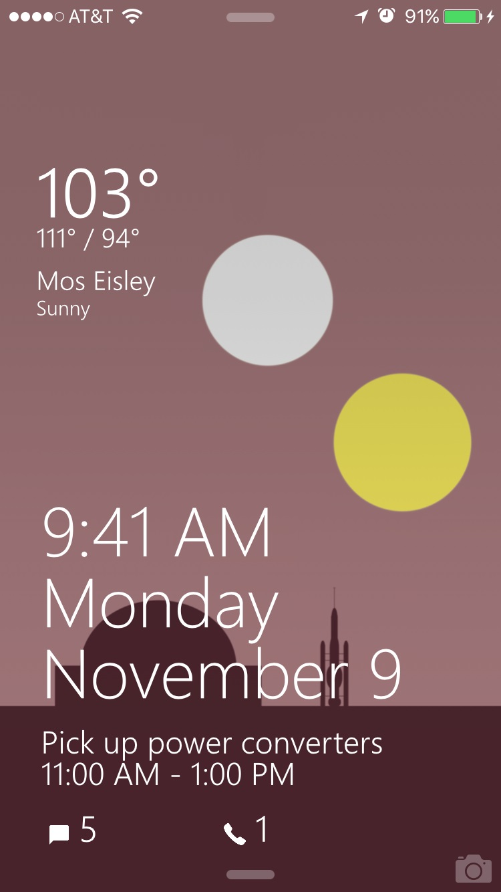
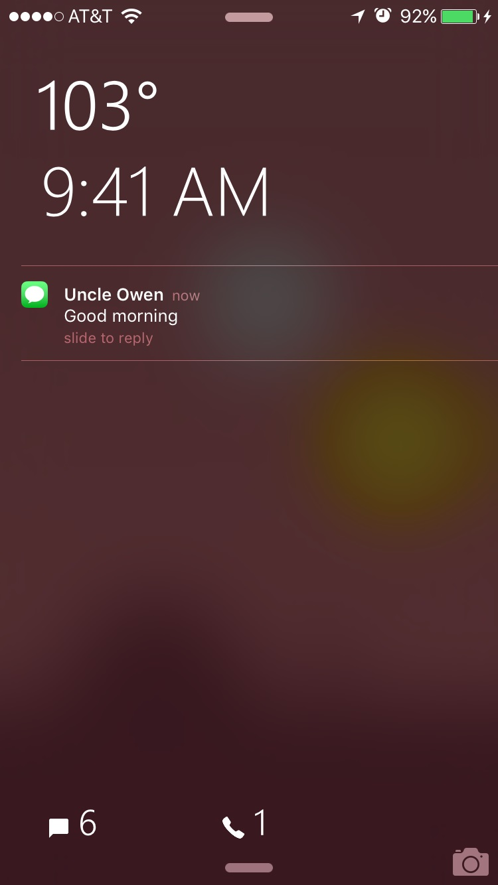

Windows Phone Lockscreen Cydget
Mimic Windows Phone's lockscreen! Fits all retina iPhones. Displays time & date, live weather based on location, details for the next calendar event, and badge numbers for Messages, Mail, and Phone. Supports native lockscreen notifications. Screenshots below.


Thanks to /u/lejazzvp and Tedd O. for helping diagnose bugs & provide feedback.
Certain UI elements from https://icons8.com/